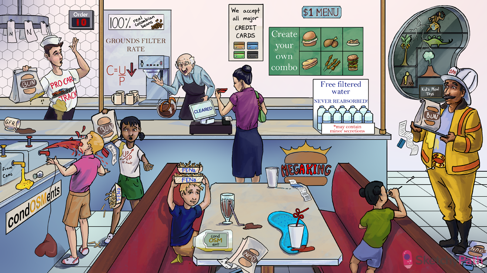

CREATE your own MEAT combo: creatinine is the breakdown product of CREATINE (found in muscle cells)
Credit card: Creatinine (used to measure kidney function)
“$1 MENU”: creatinine has a normal serum concentration of ~1.0 mg/dL (ranging from 0.6 to 1.2)
“Free filtered”: Creatinine is freely filtered at the glomerulus
“NEVER REABSORBED!”: once in the nephron, creatinine is NOT resorbed and only minorly secreted (Cr filtered load ≈ Cr urinary excretion)
“*may contain minor secretions”: creatinine is secreted in small amounts into the nephron → urine conc. is slightly higher than serum conc. (slightly overestimate GFR)
“Grounds Filter Rate”: glomerular filtration rate (GFR) is the amount of fluid that filters across the glomerulus into Bowman’s space (~125ml/min)
Credit card cleared: creatinine clearance can be used to approximate GFR (slight overestimation) because Cr is freely filtered at the glomerulus and is neither secreted (almost!) nor reabsorbed
“CUP → ”: C=UV/P (creatinine clearance equation used to estimate GFR)
“100% real”: creatinine clearance (estimation of GFR) is normally >100 ml/min mg/dL (<100 ml/min is abnormal, <10 indicates renal failure)
Elderly man knocking over filtered coffee: GFR decreases with age (renal dosing of drugs)
BUN bag: Blood Urea Nitrogen (BUN) is cleared by the kidney (final breakdown product of nitrogen containing compounds)
“N” order cycle: BUN comes from the urea cycle in the liver (amino acid metabolism)
Pyrimidine hexagon titles: BUN also comes pyrimidine metabolism (nitrogenous bases)
“Order 10": BUN has a normal serum concentration of ~10 mg/dL (ranging from 7-20)
Spilled filtered coffee: a decrease in GFR (renal injury or dysfunction) will cause an increase in BUN
“Pro Car Track” absorbing BUN grease: once in the nephron BUN is actively reabsorbed at the Proximal Convoluted Tubule
MEGAKING: Acute Kidney Injury (acute pre-renal, renal, or post-renal azotemia)
Trickle next to credit card: Acute Kidney Injury (AKI) manifests as increased serum creatinine and/or decreased urine output (oliguria)
Ketchup hemorrhage: hypovolemia or hemorrhage can cause PRE-RENAL AKI (kidney is hypoperfused)
Failing heart balloon: low output states (e.g. heart failure, shock) can cause PRE-RENAL AKI (kidney is hypoperfused)
BUN grease reabsorption: urea resorption in the proximal tubule is INCREASED during low perfusion states → INCREASED BUN/Cr ratio (>15)
Lifted BUN bag over credit card: increased BUN/Cr ratio (>15) in PRE-RENAL AKI
FENa fries dropping: decreased fractional excretion of sodium (FENa <1%) in PRE-RENAL AKI (sodium is conserved during low perfusion states)
“UP/UP N away!”: UNaPCr/PNaUCr (FENa equation used to assess ability to reabsorb sodium)
Pepper in the consOSMents: PRE-RENAL AKI is associated with a UOsm > 500 (concentrated urine to conserve volume)
Necrotic chocolate straw: acute tubular necrosis (ATN) is the most common cause of INTRINSIC RENAL AKI
Blue spotted kidney tray: acute interstitial nephritis (AIN) causes INTRINSIC RENAL AKI
Dripping glomerular curly straw: glomerulonephritis can cause INTRINSIC RENAL AKI
Falling BUN Bag over Credit card: BUN/Cr ratio <15 in INTRINSIC RENAL AKI (but both BUN and Cr are elevated)
Elevated FENa fries: FENa is >2% in INTRINSIC RENAL AKI (unable to reabsorb sodium)
Empty condOSMents bottle: INTRINSIC AKI is associated with a UOsm <350 (unable to conserve water)
Elevated BUN bag over Credit card: the BUN/Cre is >15 in POST-RENAL AKI (back-pressure enhances urea reabsorption)
Obstructive spit balls: bilateral nephrolithiasis can cause POST-RENAL AKI
BPH Fire hat: benign prostatic hyperplasia (BPH) can cause POST-RENAL AKI
Cancer crab buckle: cancer of the ureter, bladder, or urethra can also cause POST-RENAL AKI
Fallen BUN bag and Credit card: the BUN/Cr ratio can be decreased in severe or prolonged POST-RENAL AKI
Toys behind cracked kidney glass: AKI can cause hyperkalemia, acidosis, hypertension, and uremia (see chronic kidney disease video)